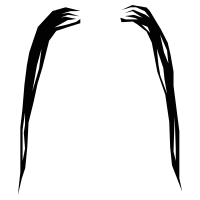

The Dali
The Dali is a stylish thin moustache with the moustache tips curled upwards to the sky using styling aids. Hair around the corners of the mouth must be shaved to ensure a nice, thin and clean spike going straight up. This style was made popular by Spanish sureallist painter Salvador Dali which the stash is named after.
“Since I don't smoke, I decided to grow a mustache - it is better for the health. However, I always carried a jewel-studded cigarette case in which, instead of tobacco, were carefully placed several mustaches, Adolphe Menjou style. I offered them politely to my friends: "Mustache? Mustache? Mustache?" Nobody dared to touch them. This was my test regarding the sacred aspect of mustaches.” – Salvador Dali
The English
The English moustache is a narrow style, beginning at the middle upper lip. The whiskers are grown out, pulled to the side and slightly curled; the ends are pointed slightly upward and areas around the corner of the mouth must be shaved. The more common name for this style is the Handlebar. It has been the iconic symbol for the moustache in our modern day.

Fu Manchu
The Fu Manchu is a slender styled moustache that droops down around the corners of the mouth. The tips are often pointed using styling aids and sometimes go below the chin. This style is often confused for the Handlebar (English) but don’t be mistaken, it’s origins are much different. The funny thing is, Fu Manchu was a man with a clean shaven face originally but the stash was added for the movies thus giving it the name Fu Manchu.
The Walrus
Thick whiskers that are bushy, untidy and often droops over the mouth characterize this style. The name comes simply from the fact that it resembles the whiskers of a Walrus. Popularized in the 19th and 20th century and loosing steam around the 1920's, it had a small renaissance among the 1960's counter culture. There are a number of variations but it is easy to spot the wild whiskers from a mile away.
The Pencil Moustache
Characterized by a thin line above the upper lip trimmed quite short to look almost as if it was drawn with a pencil. Sometimes it is split in the middle by a space but it is not necessary. Often associated with spivs, the pencil moustache was popularied by many sharp dress men such as John Waters, Vincent Price and Little Richard.
The Lamp Shade A.K.A Pyramid
Definitely a less popular style, the Lampshade can be identified by the tuft of hair in the middle with downward angled corners to give the shape of a lampshade. This style is underrated and paired with a smart classy essemble can really created a sophisticated look. Try it on and get some dapper into your life!
The Chevron
Covering the entire uper lip and ending at the corners of the mouth, this style says a lot about a man’s refined appraoch to life. This style instills confidence and is often worn by a man who knows what he wants. There is definitely a level of masculinity necessary to sport this manly stash.
The Toothbrush
This iconic stash is known by a 1-2 inch bush of hair in the center of the upper lip. This style lost popularity after WWII because one of history’s most famous vilains Hitler made it his own. Among other famous people that wore this style is Charlie Chaplin but unfortunately Hitler’s extreme actions kind of ruined it for everyone.
Movember

If you would like to learn more about the good work they are doing at Movember visit the Movember website or any of their social media outlets. Make a donation, grow and stache and become part of the community.